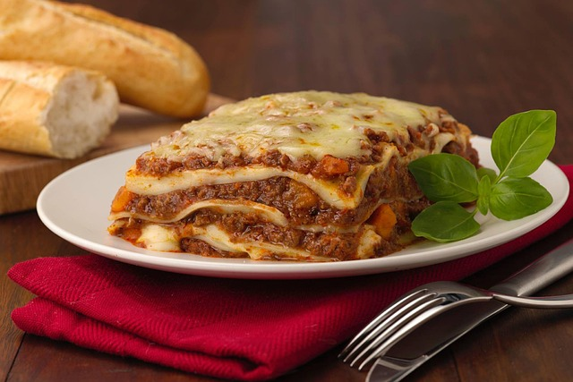

Home
Lasagna

Description
This lasagna is all about bold, comforting flavors and
perfectly balanced layers. The rich meat sauce simmers
slowly with garlic, onions, and Italian herbs to develop
a deep, savory base. Creamy ricotta (mixed with a touch
of Parmesan and egg for richness) adds a smooth contrast,
while generous layers of gooey mozzarella melt into every
bite. Finished with a golden, cheesy top, this is a hearty,
satisfying lasagna that’s worth every step.
Ingredients
- Lasagna noodles – 9–12 sheets (regular or oven-ready)
- Ground beef – 1 lb (450g)
- Italian sausage (optional) – ½ lb (225g)
- Onion – 1 small, diced
- Garlic – 3 cloves, minced
- Crushed tomatoes – 1 can (28 oz / 800g)
- Tomato paste – 2 tbsp
- Dried oregano – 1 tsp
- Dried basil – 1 tsp
- Salt & pepper – to taste
- Ricotta cheese – 1 ½ cups
- Mozzarella cheese – 2 cups, shredded
- Parmesan cheese – ½ cup, grated
- Egg – 1 (optional, for ricotta mixture)
- Olive oil – 1 tbsp
Steps
- Preheat oven to 375°F (190°C).
- Cook the meat sauce:
- In a large skillet over medium heat, sauté onion in olive oil until soft.
- Add garlic, ground beef, and sausage. Cook until browned. Drain excess fat.
- Stir in crushed tomatoes, tomato paste, oregano, basil, salt, and pepper.
- Simmer for 20–30 minutes, stirring occasionally.
- Prepare the ricotta mixture (optional):
- In a bowl, mix ricotta, egg, half the Parmesan, and a pinch of salt.
- Cook the lasagna noodles (if not using oven-ready):
- Boil according to package instructions. Drain and lay flat on a clean surface.
- Assemble the lasagna:
- In a 9x13 inch baking dish, spread a thin layer of meat sauce.
- Layer 3–4 noodles over the sauce.
- Spread ricotta mixture, then meat sauce, then mozzarella.
- Repeat layers until ingredients are used, ending with sauce and mozzarella on top.
- Sprinkle with remaining Parmesan.
- B